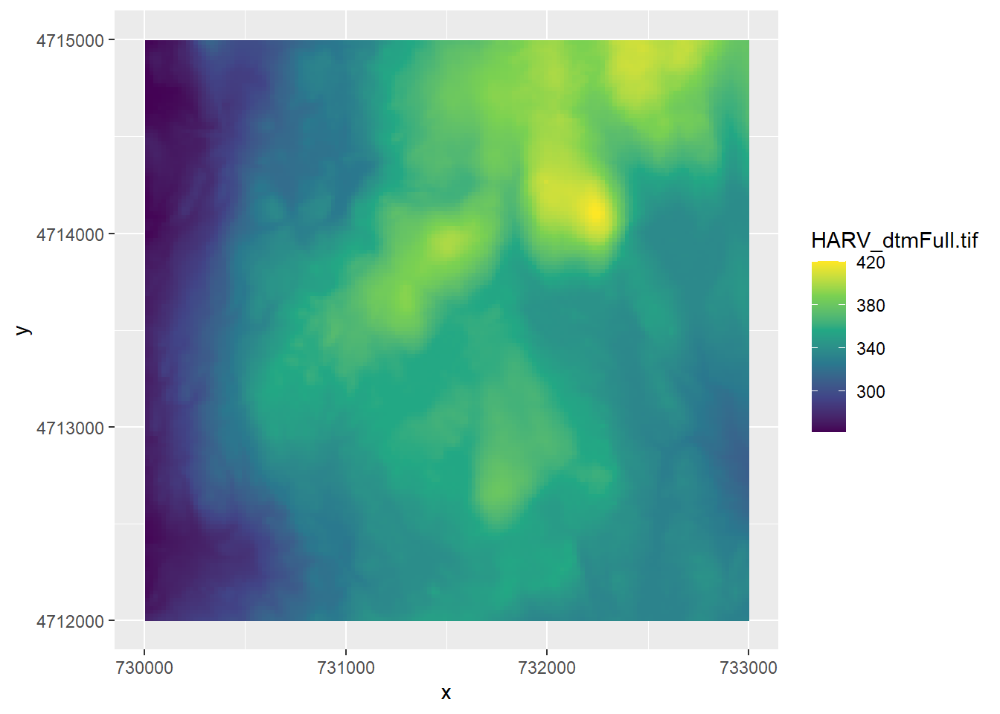
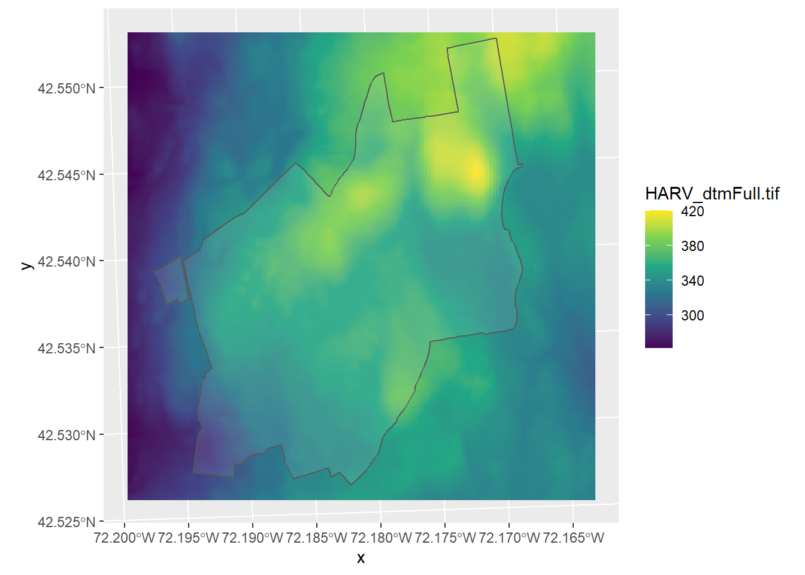

5 Reading in Raster Data
We will use the R package stars for handling raster data. You will have to download and install this package from the CRAN repository (review section 4.10 of the MUN Biology R manual if need a reminder of how to do this).
library(stars) To plot the data (i.e., make a map) we will also need the package ggplot2, so make sure to load and install that as well, if you haven’t yet already.
library(ggplot2)If you didn’t already set the working directory to where you have downloaded the HARV folder, do so now. This folder contains 4 .tif files. You may be familiar with .tif files as digital photographs. These are a special kind of .tif called a geotiff. Like a digital photograph, it has pixels, but it also has georeferenced data.
We will read in the raster that represents the digital terrain model (dtm for short) - in this raster, each pixel gives the elevation above sea level of that point. We use the read_stars function.
HARV_dtm <- read_stars("HARV/HARV_dtmFull.tif")To plot it, we use geom_stars() in ggplot(). We’ll use the viridis colour palette. Note that we specified _c (for continous) here, because the raster values are continuous data, whereas when we used the colour palette for the soils polygon data in the 4 chapter, we used _d (for discrete), because those data were discrete categories.
ggplot() +
geom_stars(data = HARV_dtm) +
scale_fill_viridis_c()
NOTE: If it takes too long to draw the map, try loading in a subset of the dtm (the “HARV_DTMCrop.tif” file) instead. Raster files can take a long time to load and depending on your computer’s available CPU, you may wish to use a smaller raster layer)
What if we want to show the boundaries of the Harvard forest on top of this raster layer? Add it in ggplot like this:
ggplot() +
geom_stars(data = HARV_dtm) +
geom_sf(data = HARV_boundary, alpha = 0.1) +
scale_fill_viridis_c()
Let’s try making another map that combines raster and vector data. Download the SJER folder, and change your working directory to that folder. This is similar data to that from the Harvard forest, but from the San Joaquin Experimental Range. On your own, read in the following layers and try to plot them. 1. sjer_plots (these are point files that represent the location of the sample plots) 1. SJER_dtmFULL.tif (a raster of the digital terrain model showing elevations)
SJER_plots <- st_read("SJER/sjer_plots.shp")## Reading layer `sjer_plots' from data source `C:\Users\ywiersma\Documents\BIOL4651\GIS_R_manual\ConservationGIS\SJER\sjer_plots.shp' using driver `ESRI Shapefile'
## Simple feature collection with 7 features and 2 fields
## geometry type: POINT
## dimension: XY
## bbox: xmin: -119.7432 ymin: 37.10542 xmax: -119.7298 ymax: 37.11729
## geographic CRS: WGS 84SJER_dtm <- read_stars("SJER/SJER_dtmFULL.tif")
ggplot() +
geom_stars(data = SJER_dtm) +
geom_sf(data = SJER_plots)
You will get a map that does not quite look right. Congratulations - you’ve discovered the most common (and frustrating) issue with spatial data - conflicting projections. To learn more, go the the chapter on projections; chapter 6.